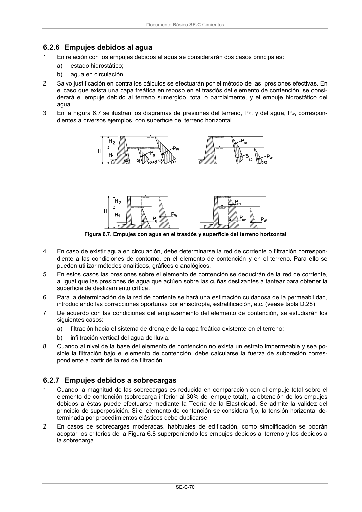

DB-SE-C Cimientos · edición 2019-12-20 · capa oficial
Documento DB-SE-C-oficial · SHA-256 del PDF a71133f4b0dca253e45ea3071c70f2a512354bcc5cd841bf89b1a502f567ac5e
Copia fiel del PDF fuente · Fuente oficial
Ficha de la disposición en la fuente oficial
Formatos: JSON del segmento · Markdown
6.2.6 Empujes debidos al agua 1 En relación con los empujes debidos al agua se considerarán dos casos principales: a) estado hidrostático; b) agua en circulación. 2 Salvo justificación en contra los cálculos se efectuarán por el método de las presiones efectivas. En el caso que exista una capa freática en reposo en el trasdós del elemento de contención, se consi- derará el empuje debido al terreno sumergido, total o parcialmente, y el empuje hidrostático del agua. 3 En la Figura 6.7 se ilustran los diagramas de presiones del terreno, PS, y del agua, Pw, correspon- dientes a diversos ejemplos, con superficie del terreno horizontal. Figura 6.7. Empujes con agua en el trasdós y superficie del terreno horizontal 4 En caso de existir agua en circulación, debe determinarse la red de corriente o filtración correspon- diente a las condiciones de contorno, en el elemento de contención y en el terreno. Para ello se pueden utilizar métodos analíticos, gráficos o analógicos. 5 En estos casos las presiones sobre el elemento de contención se deducirán de la red de corriente, al igual que las presiones de agua que actúen sobre las cuñas deslizantes a tantear para obtener la superficie de deslizamiento crítica. 6 Para la determinación de la red de corriente se hará una estimación cuidadosa de la permeabilidad, introduciendo las correcciones oportunas por anisotropía, estratificación, etc. (véase tabla D.28) 7 De acuerdo con las condiciones del emplazamiento del elemento de contención, se estudiarán los siguientes casos: a) filtración hacia el sistema de drenaje de la capa freática existente en el terreno; b) infiltración vertical del agua de lluvia. 8 Cuando al nivel de la base del elemento de contención no exista un estrato impermeable y sea po- sible la filtración bajo el elemento de contención, debe calcularse la fuerza de subpresión corres- pondiente a partir de la red de filtración.
